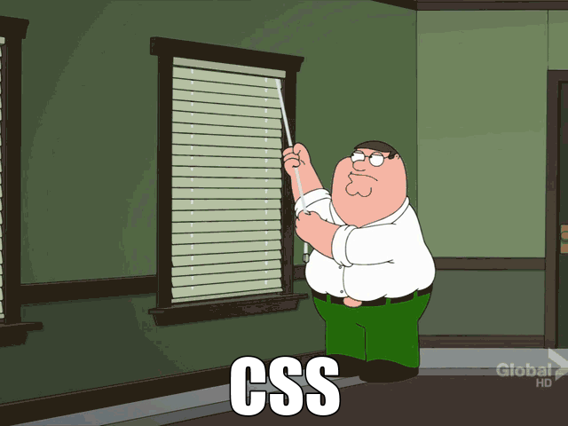

Yep, sorry, that shiny new skill you just mastered is already nearly useless. Uh…yay? Sigh. Welcome to life on the front-end.
Hipsters
Hipster
Dork
Sass
Angular
Ember
Bower
Grunt
NodeJS
Gulp
Turn Capabilities into Opportunities
CoffeeScript
ES6
Revolutionsdon't happen when society adopts new technologieshappen when society adopts new behaviors.
Fogg Behavior Method
A model for persuasion
Behavior
MotivationxAbilityxTrigger=
Motivation
Ability
Triggers
Mid Aughts
Back it up
DHTMLX
Dojo
MooTools
Prototype
jQuery
Scriptaculous
ExtJS
YUI
The response has been enormousshows how badlywe wanta better library
Simplesolution
GoodDocumentation
An invitation toparticipate
Michael Geary contacted me today to let me know that he’s finished the first
third-party jQuery plugin...I’m planning on opening up a plugin repository soon,
so that plugin authors can submit their code, have an area for documentation
and comments, and allow for patches.
jQuery Success
#1 OOS framework in use
a simple approach
good documentation
an invitation to participate
@@@ Trends Graph here please
npm is the heart of node.js. It’s the secret to node’s success:
a package manager that learned from its predecessors and got an enormous number
of things right...You’re cooking with jet fuel, jet fuel provided in little
modular canisters by hundreds of strangers who like to share their
codefuel with everybody else...
NPM lets me give back
...[it's]
the secret advantage of node
CSS isPAINFUL
circa 2007

Status of our stylesheets
960px all my designs rock
IE 6, 7, 8, 9, FML
CSS3, I think my problems are solved!
SMACSS
OOCSS
BEM
RWD
Sass
Less
Stylus
Turbine
CSS PP
DT CSS
CSS Preprocessor
CSS Cacheer
Switch CSS
Hopefully, [both] projects will continue to
learn from each other and grow to serve the needs of CSS designers as well
as possible.
Game Changer
.Net Award 2014
Shortlisted for best Open Source design project, too!
Compass provides
direction
Susy
Breakpoint
Bourbon
Sache
Pave the Cowpaths
influencing parent language
@@@css4 research here
It's a
bottom-up, participatory innovation
it's
democratic
, it's chaotic,
it's hard to control. It's not bad, but it's very different…the
traditional rules that we have for institutions don't work anymore
New Behaviors
We’re enabling groups and individuals to try radical things by removing any barriers to collaboration
We’re creating an environment in which people who want to get something done can in a timely fashion
We’re creating encouraging and supportive environments that nurture creativity and individuality
If we want to change what our cities look like,
then we really have to change the decision-making processes
that have given us the results that we have right now.
We need a participation revolution, and we need it fast.
It's
uncontrolled
even
out of control
that's its
real power
Create opportunities
where they matter most
What matters most now is our imaginations. What we do with the opportunities
before us will be determined largely by how well we are able to imagine and
reward public creativity, participations, and sharing.
Make Shit Up
Changes of scale mean that
improbably theories become likely
and that
unlikely events become certainties
MythCSS
ReWorkCSS
HarpJS
broccolijs
MeteorJS
GobbleJS
[T]here is less harm in indulging the spurious impulse for a time than in
thwarting the impulse which is genuine.
This artist's impulse is a thing of infinite value to the individual, and often
to the world; to respect it in oneself and in others makes up nine-tenths of the good life.
It's about Humanity
No Cliques
A very wise person once said
Yes
we are succeeding
The Front-End Revolution
Claudina Sarahe | @itsmisscs | @oddestbirds
Thanks To
Organizers of this conference for prioritizing community
Ben Melancon, Jack Aponte, & Mallory Knodel and other Radical Techies who introduced me to the value of FOSS and worker-owned/people powered communities
Sass, the queerest, most radical community yet. <3 you.
my mom for having all the books on Network Structure and for Bertrand Russell.
all those marching in protest for what they believe in. Now and throughout history.